HYD · 실습 가이드운전 조건과 성과 기준에 따른 조치 결과 비교하기
3회차 이론에서 조치 후보를 승인하려면 세 가지가 정해져 있어야 한다고 배웠습니다. 어떻게 하는지 적은 SOP, 지금 해도 되는지 가리는 판단 규칙, 무엇이 나은지 견주는 성과 기준입니다. 이 셋이 포털 어디에 들어 있는지 찾고, 조건과 기준을 하나씩 바꿔 가며 결과가 어떻게 달라지는지 봅니다. 과정의 세 단계(온톨로지 → AI 에이전트 → 프로세스) 가운데 온톨로지 단계로, 설비 지식에 붙은 조치의 기준을 봅니다.
01 포털에서 조치 방법 열기
| 할 일 | 조치 방법 화면에서 SOP의 구성 요소를 찾고, 운전 모드 · 위약금 · KPI 목표를 하나씩 바꿔 허용 · 제외되는 조치와 순위, 판정이 어떻게 달라지는지 봅니다. |
|---|
| 순서 | 조치 방법 → 규칙 판단 → 조건 바꿔 보기 → 조건별 손익 → 성과 지표 → 실시간 모니터링 |
|---|
| 준비 | 1회차에 켰던 대로 포털을 켜고 홈을 엽니다. 사진은 설비 세 대가 고장 없이 도는 상태에서 찍었습니다. 1회차에 쿨러에 고장을 낸 뒤 쿨러 복구를 누르지 않았다면, 유압 설비 › 결함 시뮬레이션의 HYD-01 카드에서 쿨러 복구를 누르고 상태가 운전 중으로 돌아온 뒤 시작합니다. |
|---|
| 끝나면 | 바꿔 본 값을 되돌린 뒤 업무 시스템의 값, 지식의 목표값, 설비의 운전 모드가 처음 그대로인 것을 확인합니다. |
|---|
고장을 내거나 승인하지 않습니다. 넣어 보는 값은 모두 계산에만 쓰입니다. 점수 · 금액 · 시간 같은 숫자는 포털을 켠 시각에 따라 사진과 조금 다를 수 있습니다.
홈 왼쪽 메뉴에서 지식을 펼치고 조치 방법을 누르세요.
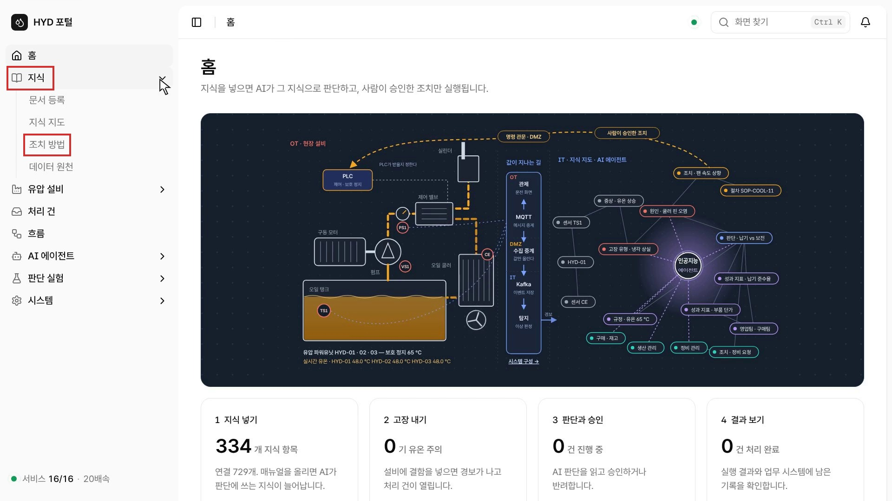
홈 왼쪽 메뉴의 지식 › 조치 방법 · 누르면 크게 보기02 조치 방법에서 SOP 찾기
왼쪽 목록의 한 줄이 조치 방법 하나, 이론에서 본 SOP 한 편입니다. 이름 밑 작은 글씨는 조치의 종류와 그 조치를 쓰는 고장 유형입니다. 오른쪽 위 새 조치 방법은 지식에 조치를 새로 더하는 단추라 누르지 않습니다.
목록에서 쿨러 핀 세척을 누르세요.
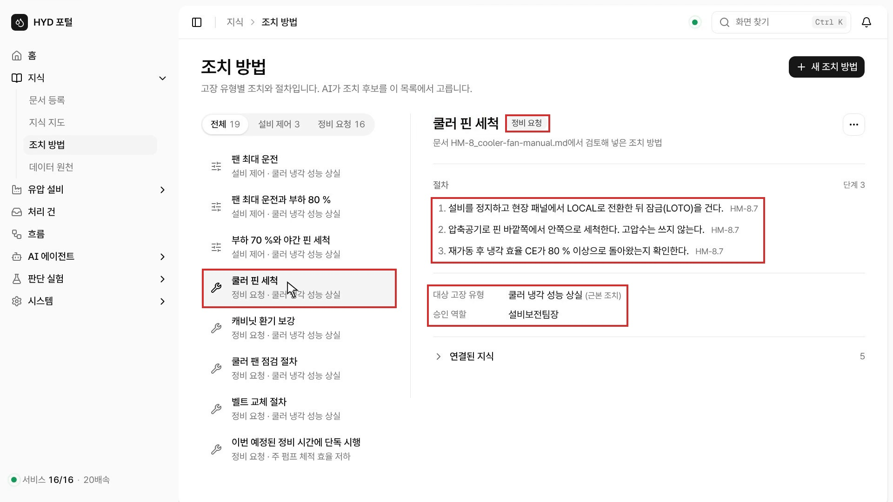
쿨러 핀 세척: 목록의 줄, 이름 옆 종류, 번호 붙은 단계 세 줄과 줄 끝 작은 글, 대상 고장 유형 · 승인 역할 · 누르면 크게 보기SOP의 구성 요소가 화면의 이 자리에 있습니다.
| SOP에서 | 화면에서 찾을 곳 |
|---|
| 수행 단계 | 이름 아래 번호 붙은 줄 셋 |
| 안전 조건(시작 전) | 1번 줄: 설비를 세우고 운전 모드를 LOCAL(현장 제어)로 바꾼 뒤 잠금을 건다 |
| 금지 사항(하는 동안) | 2번 줄 끝: 고압수는 쓰지 않는다 |
| 완료 확인 기준(끝낼 때) | 3번 줄: 다시 돌린 뒤 냉각 효율이 80 % 이상으로 돌아왔는지 확인한다 |
| 근거 문서 | 줄 끝 작은 글(HM-8.7): 그 문장이 나온 매뉴얼의 대목 |
| 적용 대상 | 대상 고장 유형 줄: 쿨러 냉각 성능 상실, 괄호의 근본 조치는 원인을 없애는 조치라는 표시 |
| 승인 역할 | 승인 역할 줄: 설비보전팀장(이론의 보전 책임자) |
| 수행하는 쪽 | 이름 옆 종류 정비 요청: 정비하는 사람에게 일을 맡기는 조치 |
목록 맨 위 팬 최대 운전을 누르세요.
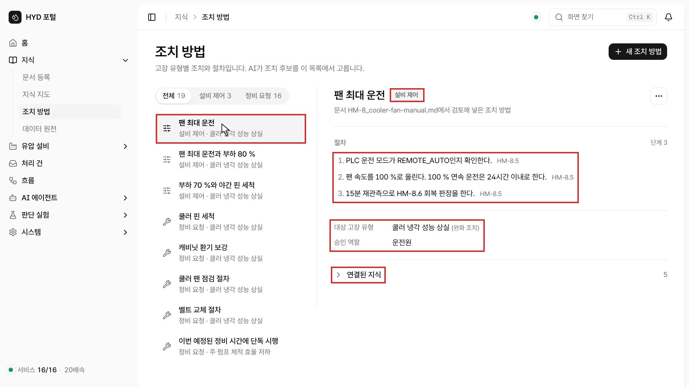
팬 최대 운전: 이름 옆 설비 제어, 번호 붙은 단계 셋, 대상 고장 유형 · 승인 역할, 접힌 연결된 지식 · 누르면 크게 보기종류가 설비 제어라 승인하면 명령이 설비로 내려가는 조치입니다. 1번 줄이 이론에서 본 조건 문장으로, 운전 모드가 REMOTE_AUTO(원격 자동, 승인 뒤 자동으로 내려오는 명령을 설비가 받아들이는 모드)일 때만 하라는 뜻입니다. 2번 줄에는 팬을 최대로 돌리는 시간을 24시간 안으로 하라는 말이 있고, 괄호의 완화 조치는 증상을 우선 낮추는 조치라는 표시입니다. 같은 고장에 쓰는 조치인데도 쿨러 핀 세척과 조건, 승인 역할이 다릅니다.
승인 역할 아래 접힌 연결된 지식을 누르고, 펼쳐진 적용 규칙이 다 보이게 화면을 내리세요. 네 줄 가운데 「감점 —」 줄과 「제외 —」 줄을 봅니다. 나머지 줄은 이번에는 몰라도 됩니다.
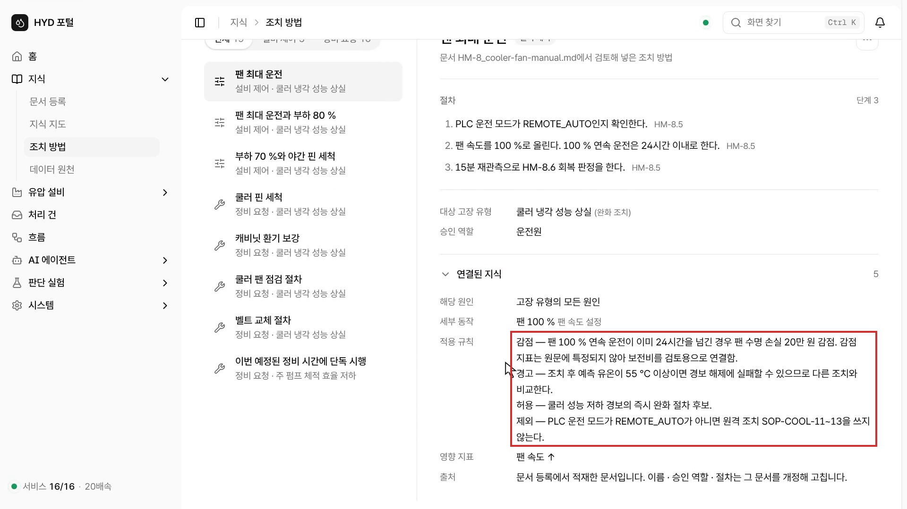
연결된 지식의 적용 규칙 네 줄 · 누르면 크게 보기확인 「제외 —」 줄은 운전 모드가 원격 자동이 아니면 이 조치를 쓰지 않는다는 규칙이고(1번 줄의 조건), 「감점 —」 줄은 24시간을 넘겨 팬을 최대로 돌려 왔으면 감점한다는 규칙입니다(2번 줄). 절차의 조건이 판단 규칙으로도 따로 적혀 있습니다.
03 규칙 판단에서 모의 판단 해 보기
왼쪽 메뉴 판단 실험을 펼쳐 규칙 판단을 누르세요. 어떤 설비에 어떤 경보가 왔다고 치고 판단을 계산만 해 보는 곳이라, 처리 건이 열리지 않고 승인으로도 이어지지 않습니다.
설비 칸이 HYD-01, 이상 패턴 칸이 쿨러 성능 저하 → 쿨러 냉각 성능 상실인지 보고 모의 판단을 누르세요. 이상 패턴은 경보의 종류입니다.
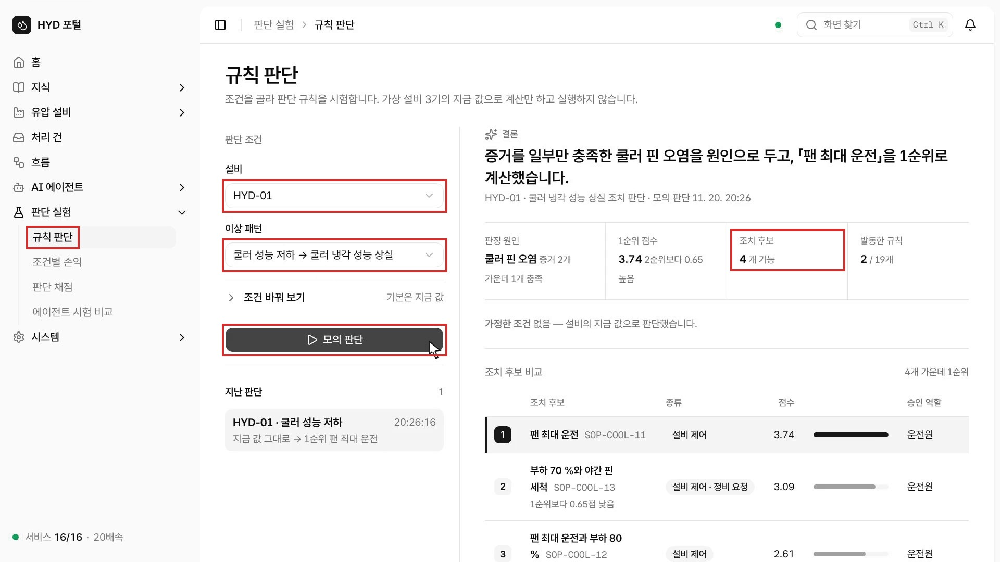
규칙 판단: 설비 · 이상 패턴 칸, 모의 판단, 결과의 조치 후보 칸 · 누르면 크게 보기확인 오른쪽에 결과가 나오고, 숫자 칸 가운데 조치 후보가 4개 가능입니다. 조치 방법에서 제외 규칙을 봤는데도 제외된 후보가 없습니다.
볼 곳은 가운데 조치 후보 비교 표입니다. 줄마다 조치 이름 · 종류 · 점수 · 승인 역할이 있고, 점수가 높을수록 앞 순위입니다. 맨 위 결론 문장과 표 아래 근거는 원인을 가리는 쪽이라 이번에는 보지 않아도 됩니다.
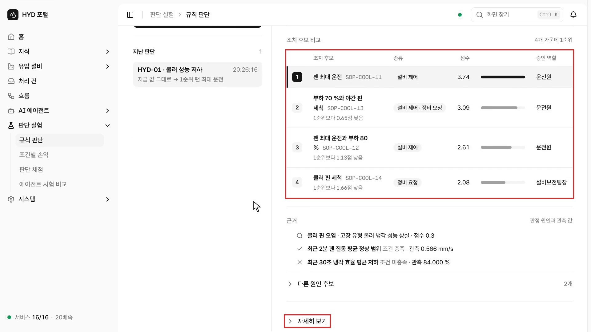
조치 후보 비교 표와 그 아래 접힌 자세히 보기 · 누르면 크게 보기표 아래 접힌 자세히 보기를 누르세요. 첫 탭 판단에 쓴 값이 결정표의 입력 데이터, 판단의 답을 정하는 데 쓰는 값입니다.
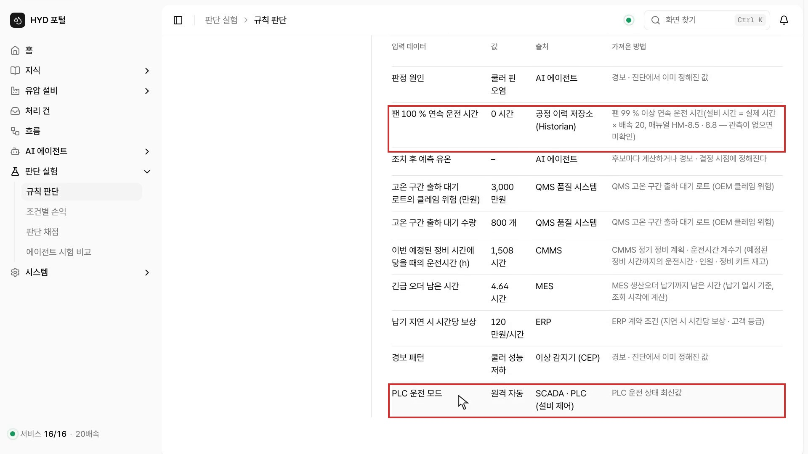
판단에 쓴 값: 팬 100 % 연속 운전 시간 줄과 PLC 운전 모드 줄의 값 · 출처 · 누르면 크게 보기확인 PLC 운전 모드는 원격 자동(출처 SCADA · PLC), 팬 100 % 연속 운전 시간은 0 시간입니다. 조치 방법에서 본 제외 규칙과 감점 규칙이 견주는 값이 이 둘입니다.
적용한 규칙 탭을 누르세요. 줄마다 규칙, 그 규칙을 적용한 조치(대상), 결과가 있습니다. 화면을 내려 대상이 팬 최대 운전인 「PLC 운전 모드가 REMOTE_AUTO가 아니면 …」 줄을 찾으세요.
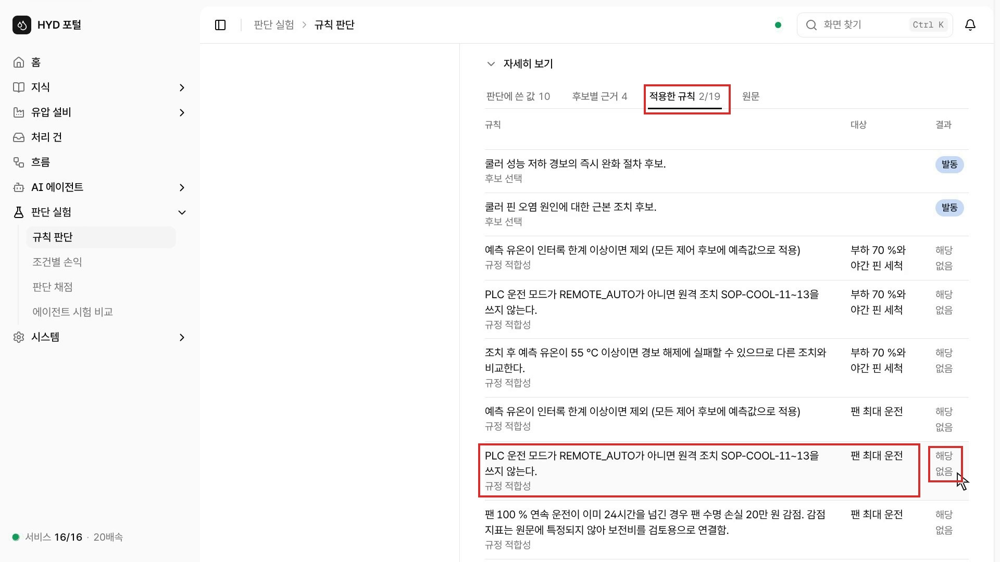
적용한 규칙: 대상이 팬 최대 운전인 REMOTE_AUTO 규칙 줄과 결과 칸 · 누르면 크게 보기확인 결과 칸이 해당 없음입니다. 운전 모드가 원격 자동이라 이 규칙에 걸리지 않았고, 그래서 제외된 후보가 없었습니다.
04 조건 바꿔 보기: 제외와 감점
왼쪽 모의 판단 단추 위 접힌 조건 바꿔 보기를 누르세요. 칸 넷이 모두 지금 값 그대로입니다. 운전 모드를 원격 수동으로 고르고 모의 판단을 다시 누르세요. 원격 수동은 누군가 관제 화면에서 설비를 직접 조작하고 있는 상태입니다. 설비의 운전 모드를 바꾸는 것이 아니라 판단에 넣는 값만 바꿉니다.
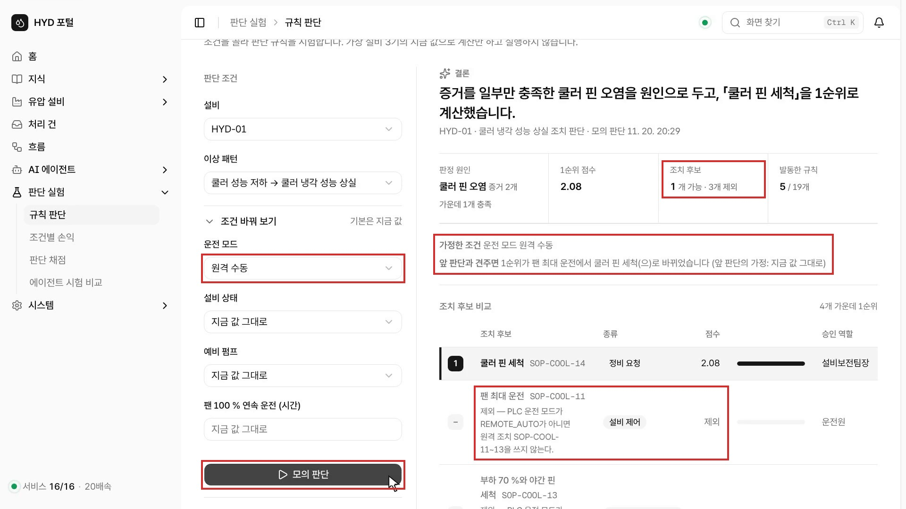
운전 모드 원격 수동으로 다시 판단한 결과: 조치 후보 1개 가능 · 3개 제외, 가정한 조건 · 앞 판단과 견준 줄, 제외된 팬 최대 운전 · 누르면 크게 보기확인 종류에 설비 제어가 든 조치 셋이 순위 없이 아래로 내려가 점수 자리에 제외가 적히고, 이름 아래에 걸린 규칙(제외 — PLC 운전 모드가 REMOTE_AUTO가 아니면 …)이 붙습니다. 남은 쿨러 핀 세척이 1순위가 됩니다. 사람이 직접 조작하는 동안 자동 명령이 끼어들지 않게, 설비가 받아들이지 않을 조치를 미리 뺀 것입니다.
운전 모드를 지금 값 그대로로 돌려놓고 모의 판단을 누르세요. 조건을 한 번에 하나씩만 바꿔야 무엇 때문에 결과가 달라졌는지 알 수 있습니다.
확인 표 위 줄이 「가정한 조건 없음」으로 바뀌고 네 후보가 돌아옵니다.
맨 아래 팬 100 % 연속 운전 (시간) 칸에 30을 넣고 모의 판단을 누르세요. 감점 규칙의 임계치 24시간보다 큰 값입니다.
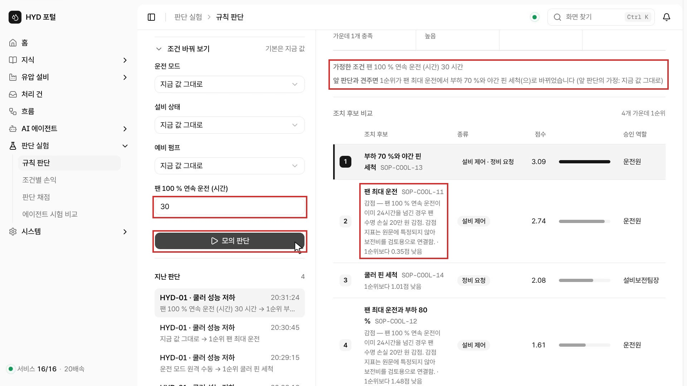
팬 100 % 연속 운전 30으로 다시 판단한 결과: 감점 글이 붙은 팬 최대 운전과 앞 판단과 견준 줄 · 누르면 크게 보기확인 팬 최대 운전이 빠지지 않고 남되 이름 아래에 「감점 — …」 글이 붙고, 1순위가 다른 조치로 넘어갑니다. 제외는 후보에서 아예 빼는 것이고, 감점은 남겨 두되 견줄 때 불리하게 셈하는 것입니다.
칸의 30을 지우고 모의 판단을 누르세요.
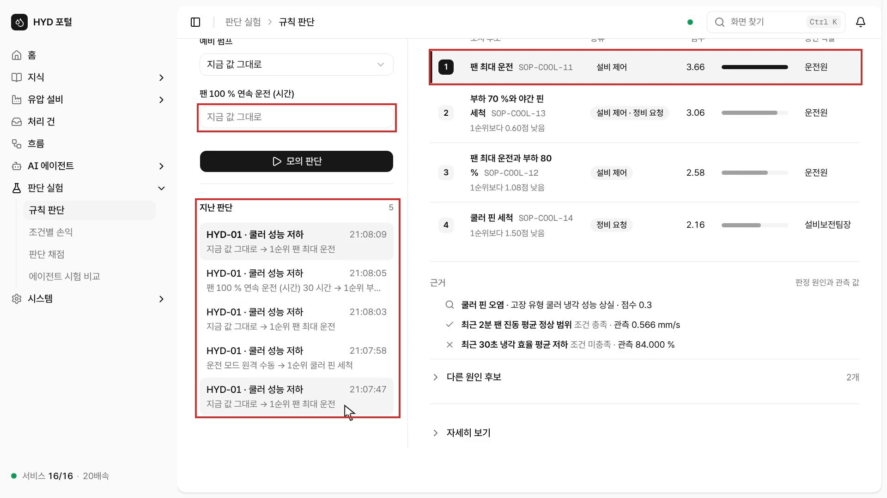
비운 칸, 처음과 같은 1순위, 왼쪽 아래 지난 판단 목록 · 누르면 크게 보기확인 처음과 같은 결과가 나옵니다. 왼쪽 아래 지난 판단에 누를 때마다 한 줄씩 쌓였고, 지금 값 그대로인 줄은 1순위가 모두 팬 최대 운전입니다. 같은 입력에는 같은 답이 나옵니다.
05 조건별 손익: 값 하나 바꿔 다시 계산하기
왼쪽 메뉴 규칙 판단 바로 아래 조건별 손익을 누르세요. 설비와 이상 패턴은 손대지 않고 기준 계산을 누릅니다. 판단을 한 번 계산해 기준으로 잡아 두고, 거기서 값을 바꿔 견줍니다.
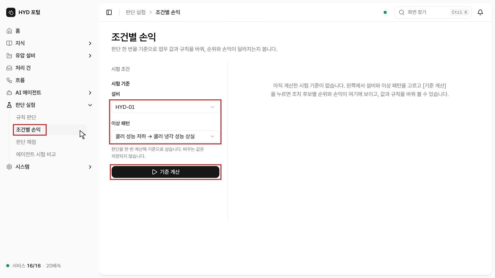
판단 실험 › 조건별 손익: 설비 · 이상 패턴 칸과 기준 계산 · 누르면 크게 보기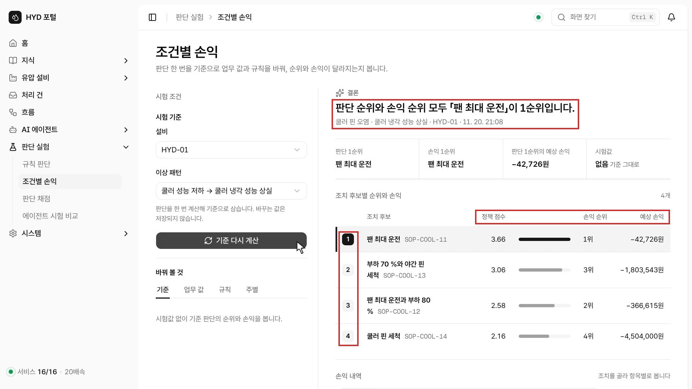
기준 계산 결과: 결론, 맨 앞 순위, 정책 점수 · 손익 순위 · 예상 손익 · 누르면 크게 보기표의 순위는 둘입니다. 맨 앞은 규칙 판단에서 본 점수(여기서는 정책 점수)로 매긴 판단 순위이고, 손익 순위는 득실을 원으로 바꿔 더한 예상 손익으로 매긴 순위입니다. 추천은 판단 순위로 정하고, 손익 순위는 돈으로 따져도 같은 답이 나오는지 견주는 데 씁니다. 예상 손익 앞의 빼기 표시는 그만큼 돈이 든다는 뜻입니다.
확인 맨 위 결론에 판단 순위와 손익 순위 모두 팬 최대 운전이 1순위라고 나옵니다.
아래 손익 내역에는 고른 조치의 금액이 항목별로 나오고 맨 아래가 합계입니다. 처음에는 팬 최대 운전이 골라져 있고, 에너지비(팬)와 고장 위험에 금액이 있습니다. 위 단추 줄에서 쿨러 핀 세척을 누르세요.
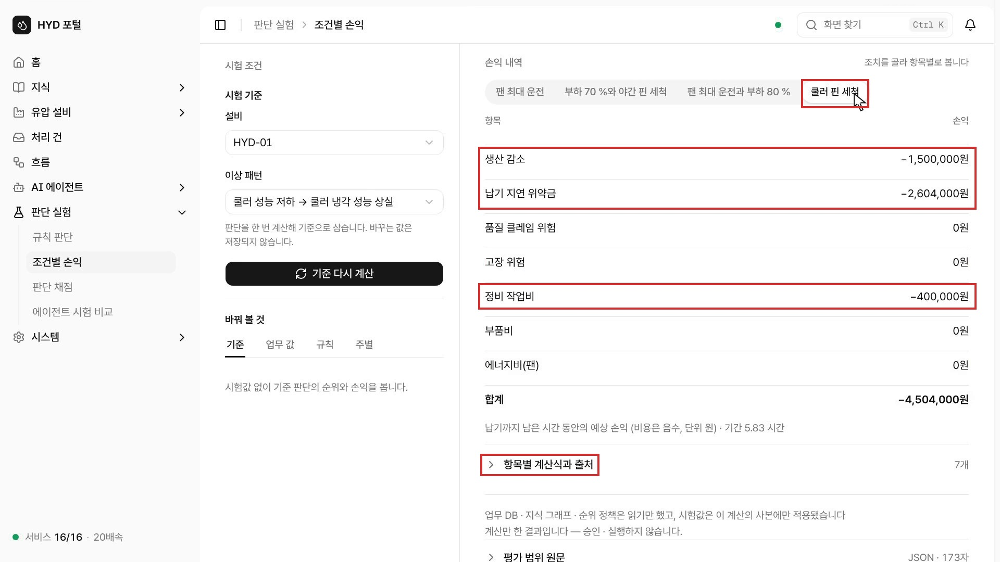
쿨러 핀 세척의 손익 내역: 생산 감소 · 납기 지연 위약금 · 정비 작업비와 접힌 항목별 계산식과 출처 · 누르면 크게 보기확인 쿨러 핀 세척은 생산 감소 · 납기 지연 위약금 · 정비 작업비에 금액이 있습니다. 두 조치는 손해가 실린 항목이 서로 달라서, 성과 하나만 보고 고르면 다른 성과에서 잃는 것을 놓칩니다.
표 아래 접힌 항목별 계산식과 출처를 누르세요.
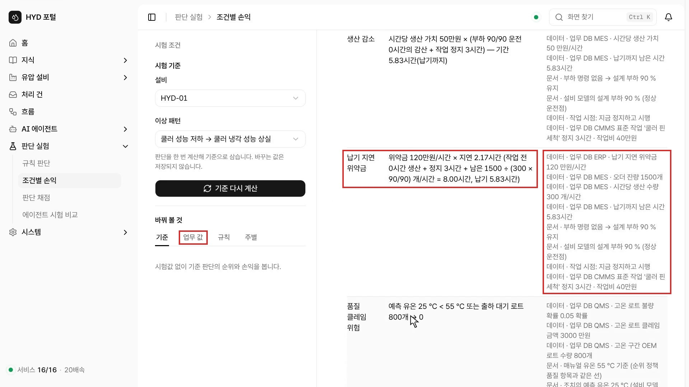
항목별 계산식과 출처의 납기 지연 위약금 줄(계산 · 출처)과 왼쪽 업무 값 · 누르면 크게 보기확인 납기 지연 위약금은 한 시간 늦을 때마다 무는 돈(120만원/시간)에 늦어지는 시간을 곱한 값입니다. 출처의 업무 DB는 업무 시스템에 들어 있는 값입니다.
이제 What-if 분석을 합니다. 다른 조건은 그대로 두고 값 하나만 바꿔 답이 달라지는지 봅니다. 왼쪽 바꿔 볼 것 아래 업무 값을 누르세요.
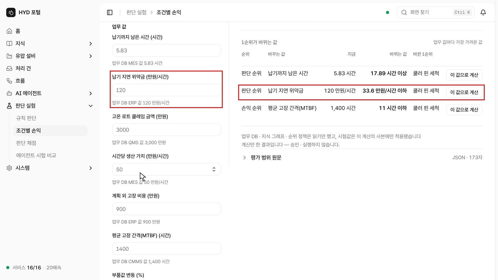
업무 값의 납기 지연 위약금 칸과, 오른쪽 1순위가 바뀌는 값 표의 납기 지연 위약금 줄 · 누르면 크게 보기칸 이름 옆 괄호가 단위이고, 칸 아래 작은 글이 그 값을 읽어 온 곳과 지금 값입니다. 오른쪽 1순위가 바뀌는 값 표는 값을 얼마로 바꾸면 1순위가 다른 조치로 넘어가는지 찾아 준 것입니다. 납기 지연 위약금 줄은 위약금이 바뀌는 값 아래로 내려가면 추천하는 1순위(판단 순위의 1순위)가 쿨러 핀 세척으로 넘어간다는 뜻입니다.
그 줄 끝 이 값으로 계산을 누르세요. 왼쪽 칸에 그 값이 들어가고 다시 계산합니다. 바뀌는 값의 숫자는 사진과 달라도 됩니다.
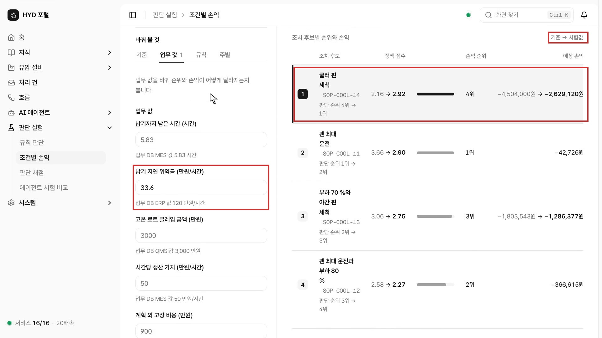
이 값으로 계산 뒤: 왼쪽 칸에 들어간 값, 표 위 기준 → 시험값, 맨 위로 온 쿨러 핀 세척 · 누르면 크게 보기확인 쿨러 핀 세척이 판단 순위 4위 → 1위로 올라오고, 정책 점수와 예상 손익이 화살표 앞뒤로 달라집니다. 손익 순위는 바뀌지 않습니다.
화면을 위로 올려 결론을 보세요.
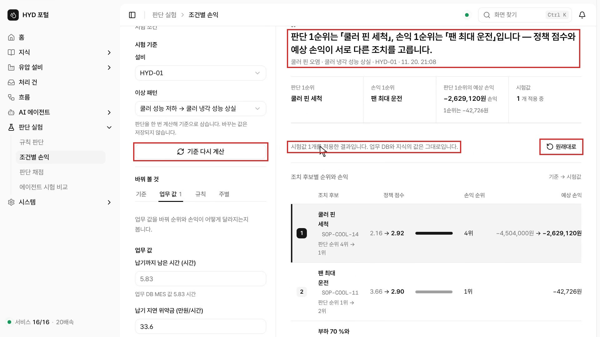
결론, 시험값 안내 줄과 원래대로, 왼쪽 기준 다시 계산 · 누르면 크게 보기확인 결론에 판단 1순위는 쿨러 핀 세척, 손익 1순위는 팬 최대 운전이라고 나옵니다. 바꾼 값이 위약금 하나이니, 추천이 달라진 까닭도 그 값입니다.
안내 줄 「시험값 1개를 적용한 결과입니다. 업무 DB와 지식의 값은 그대로입니다.」 끝의 원래대로를 누르세요. 표가 기준 값으로 돌아오고 왼쪽 칸이 비워집니다. 이어서 왼쪽 위 기준 다시 계산을 누르세요. 업무 시스템에서 값을 새로 읽어 와 처음부터 다시 계산합니다.
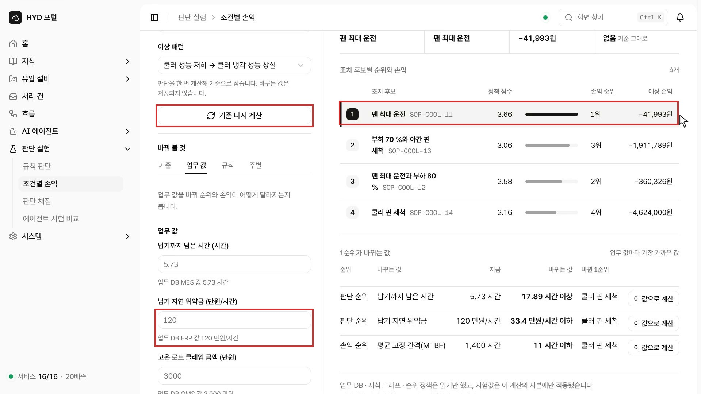
기준 다시 계산 뒤: 납기 지연 위약금 칸 아래의 업무 DB ERP 값과 표의 1순위 줄 · 누르면 크게 보기확인 새로 읽어 온 납기 지연 위약금도 120 만원/시간 그대로입니다. 넣어 본 값은 계산에만 쓰였고 업무 시스템에는 적히지 않았습니다. 표의 금액이 조금 달라진 것은 그사이 납기까지 남은 시간이 줄었기 때문입니다.
06 성과 지표: KPI 목표 바꿔 판정 보기
왼쪽 메뉴 맨 아래 시스템을 펼쳐 성과 지표를 누르세요.
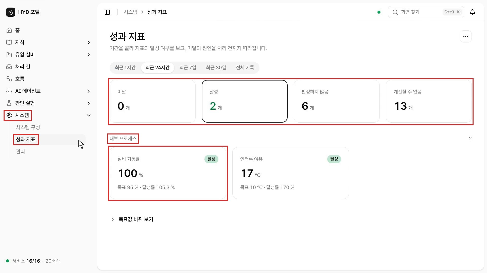
시스템 › 성과 지표: 숫자 칸 넷, 내부 프로세스, 설비 가동률 카드 · 누르면 크게 보기카드 하나가 KPI 하나이고, 카드 위 내부 프로세스는 BSC 네 관점 가운데 하나입니다. 위쪽 숫자 칸 넷은 KPI를 판정대로 센 것이고, 지금 눌린 달성 칸의 KPI가 아래에 보입니다. 설비 가동률 카드의 큰 숫자가 실제값, 그 아래 목표가 목표값입니다. 카드 이름 설비 가동률을 누르세요.
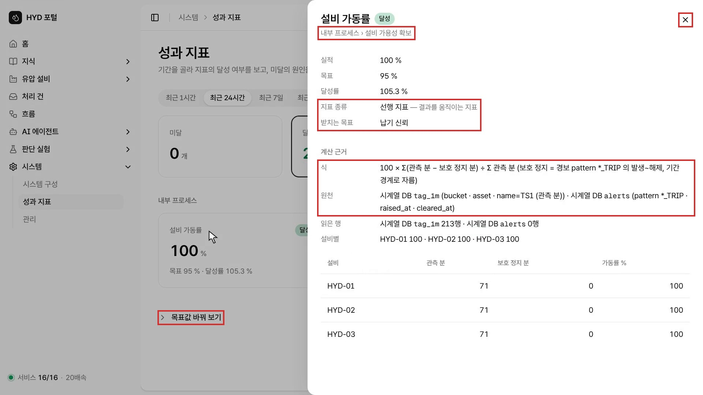
설비 가동률 옆 판: 관점 › 전략 목표, 지표 종류 · 받치는 목표, 식 · 원천, 닫는 ×와 뒤쪽의 목표값 바꿔 보기 · 누르면 크게 보기확인 옆 판에 이 KPI가 재는 전략 목표(설비 가용성 확보), 지표 종류(선행 지표), 받치는 목표(납기 신뢰)와, 계산 근거의 식(이 KPI의 정의) · 원천(어느 기록에서 읽었는지)이 있습니다.
오른쪽 위 ×로 옆 판을 닫고 카드 아래 접힌 목표값 바꿔 보기를 누르세요. 표 아래쪽 인터록 여유 줄(원래 목표 10 °C, 지금 판정 달성)의 시험 목표 칸에 20을 넣고 시험 판정을 누르세요.
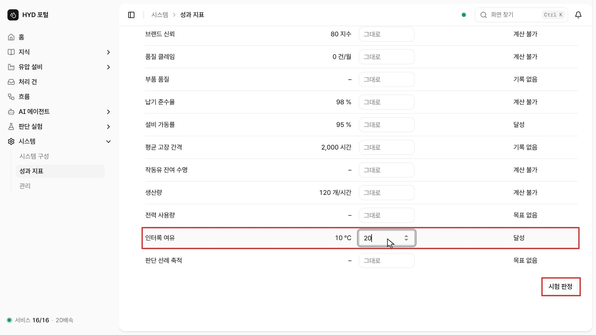
목표값 바꿔 보기의 인터록 여유 줄: 원래 목표 10 °C, 시험 목표 20, 시험 판정 · 누르면 크게 보기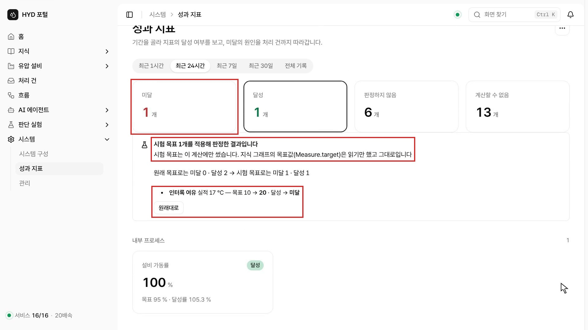
시험 판정 뒤: 숫자 칸 미달 1, 알림의 인터록 여유 목표 10 → 20 · 달성 → 미달과 원래대로 · 누르면 크게 보기확인 알림에 인터록 여유가 달성 → 미달로 바뀌었다고 나오고, 숫자 칸 미달이 하나 늘어납니다. 실제값은 그대로인데 목표값을 올려 판정이 달라졌습니다.
알림의 원래대로를 누르세요. 화면이 지식에서 목표값을 다시 읽어 와 그립니다.
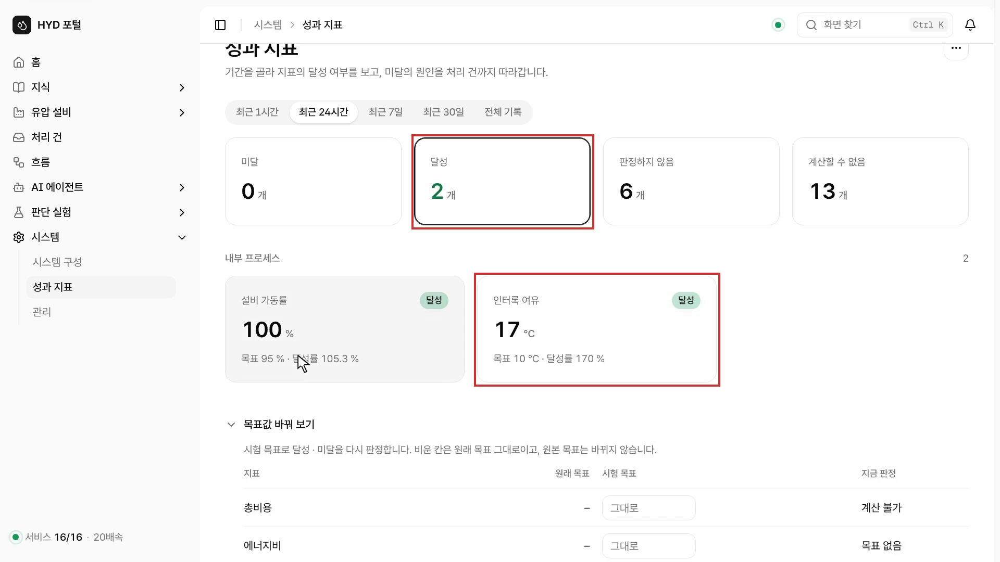
원래대로 뒤: 달성 2개, 인터록 여유 카드의 목표 10 °C · 누르면 크게 보기확인 인터록 여유가 달성으로 돌아오고 카드의 목표도 10 °C 그대로입니다. 지식에 든 목표값은 바뀌지 않았습니다.
07 설비는 그대로인지 확인하기
왼쪽 메뉴 유압 설비를 펼쳐 실시간 모니터링을 누르세요.
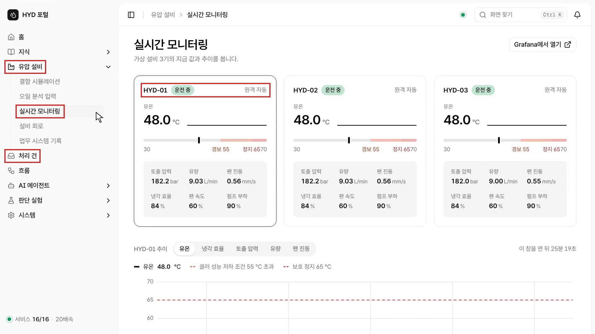
유압 설비 › 실시간 모니터링: HYD-01 카드 머리의 운전 중 · 원격 자동, 왼쪽 메뉴 처리 건 · 누르면 크게 보기확인 첫 카드 HYD-01이 운전 중 · 원격 자동이고, 왼쪽 메뉴 처리 건 옆에 새로 붙은 숫자가 없습니다. 오늘 바꿔 본 운전 모드 · 위약금 · 목표값은 모두 계산에만 쓰였습니다. 설비에 실제로 조치가 가려면 경보가 나서 처리 건이 열리고 담당자가 승인해야 합니다. 운전 모드 · 위약금 · 목표값을 하나씩 바꿀 때 허용되는 조치와 순위, 판정이 어떻게 달라졌는지 말할 수 있으면 이 실습을 마친 것입니다.